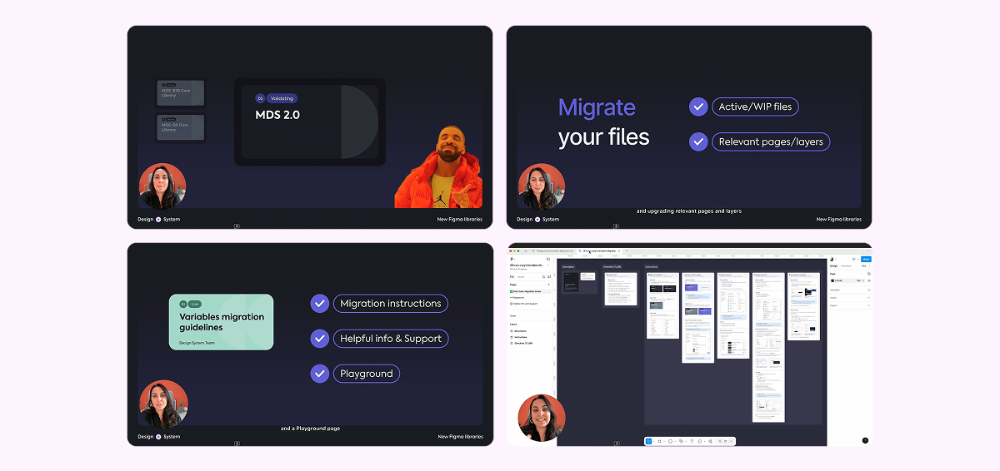

2025 became the year I pushed a design system beyond components and into something operational, measurable, and more connected to the product teams using it.
This retrospective is a candid look at the work I led across tokens, patterns, enablement, and the invisible collaboration work that kept the system alive.
My focus throughout the year was on maturing our Design System beyond components and into something more operational, measurable, and sustainable.
Some of the highlights (TL; DR):
I reworked the style-based tokens library into a variables-first system, aligned it with code behavior, and consolidated two “core” Figma libraries into one themeable library.

Outcome: designers can use themes in Figma without hacks, tokens are more consistent across design and code, and the system is ready for multi-brand growth.
I defined what a pattern is — and what it isn't — for the system, then turned that definition into a usable practice.
The work included pilot documentation, a recommended pattern cycle, and a focus on the early Contextual Feedback Indicators pattern.
Outcome: teams gained shared language for patterns, designers had clearer guidance, and pattern work moved closer to a shared responsibility.
Philosophical take: patterns are often underestimated. Most of the work is alignment and collaboration.
I made the system easier to understand by tracking adoption and support requests, then using those signals to prioritise work.
I also helped build Nova, an internal AI assistant for the design system, and created extra DS tools that supported pattern definition and documentation.
Outcome: designers gained confidence, repetitive questions dropped, and the team had clearer signals about where the system needed help.
The system lived through real product decisions, so a lot of my time was spent helping designers navigate ambiguity, constraints, and deadlines.
I supported teams through Slack, reviews, documentation clean-up, and recurring cross-team discussions about quality and accessibility.
Outcome: better, faster decisions from designers, stronger trust in the system, and more of the work becoming a partner instead of a blocker.
Philosophical take: invisible work scales. The small things often matter more than the big, shiny projects.
A company reorg shifted my role out of the design system team and into Product Design, then gave me the chance to choose a new path.
That change made it clear that the future for me is at the overlap of design systems, engineering, and AI.
The takeaway: 2025 was a year of hands-on system work. 2026 is shaping up to be about bringing that systems mindset into new design and product challenges.